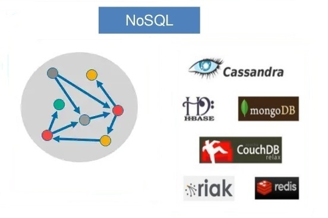

Bancos de Dados Relacionais
Bancos de dados relacionais organizam dados em tabelas interligadas por relações. Eles seguem o modelo relacional, onde os dados são armazenados em linhas e colunas. Cada linha em uma tabela representa um registro único, e cada coluna representa um atributo do dado.
Exemplos comuns de bancos de dados relacionais incluem MySQL, PostgreSQL, Oracle e SQL Server. Esses bancos são amplamente utilizados em aplicações onde a consistência e a integridade dos dados são cruciais, como sistemas bancários e aplicativos de e-commerce.
Vantagens
- ACID: Garantia de transações seguras (Atomicidade, Consistência, Isolamento e Durabilidade).
- SQL: Uso de uma linguagem padrão e poderosa para consultas.
- Integridade: Forte consistência dos dados através de chaves primárias e estrangeiras.
Desvantagens
- Escalabilidade: Dificuldade em escalar horizontalmente (distribuir em vários servidores).
- Flexibilidade: Estrutura rígida de esquemas que pode limitar a flexibilidade.
Exemplo de Banco de Dados Relacional - MySQL
Um exemplo simples de tabela relacional para um sistema de gerenciamento de alunos:
CREATE TABLE Professores (
id INT PRIMARY KEY AUTO_INCREMENT,
nome VARCHAR(100),
email VARCHAR(100)
);
CREATE TABLE Turmas (
id INT PRIMARY KEY AUTO_INCREMENT,
nome VARCHAR(100),
semestre INT,
ano INT,
professor_id INT,
FOREIGN KEY (professor_id) REFERENCES Professores(id)
);
CREATE TABLE Alunos (
id INT PRIMARY KEY AUTO_INCREMENT,
nome VARCHAR(100),
matricula VARCHAR(20)
);
CREATE TABLE Atividades (
id INT PRIMARY KEY AUTO_INCREMENT,
turma_id INT,
valor DECIMAL(5, 2),
data DATE,
FOREIGN KEY (turma_id) REFERENCES Turmas(id)
);
Essas tabelas representam uma estrutura relacional onde as turmas estão ligadas aos professores e atividades estão associadas às turmas.
Bancos de Dados Não Relacionais
Bancos de dados não relacionais, ou NoSQL, oferecem uma abordagem mais flexível para o armazenamento de dados. Eles não seguem o modelo relacional, permitindo o uso de estruturas de dados como documentos, chave-valor, colunas e grafos.
Exemplos populares incluem MongoDB, Redis, Cassandra e Neo4j. Esses bancos de dados são usados em aplicações onde a escalabilidade, a flexibilidade e a performance são prioritárias, como em sistemas de big data, redes sociais e aplicações de IoT.
Vantagens
- Escalabilidade: Facilidade em escalar horizontalmente.
- Flexibilidade: Estruturas de dados dinâmicas e sem esquema definido.
- Performance: Otimização para leituras e escritas rápidas em grandes volumes de dados.
Desvantagens
- Consistência: Pode haver concessões em consistência (eventual consistency).
- Complexidade: Pode ser mais complexo gerenciar dados em estruturas não relacionais.
Exemplo de Banco de Dados Não Relacional - MongoDB
Um exemplo de documento em um banco de dados NoSQL, MongoDB, para um sistema de gerenciamento de alunos:
{
"_id": ObjectId("507f1f77bcf86cd799439011"),
"nome": "João Silva",
"matricula": "2024001",
"turmas": [
{
"nome": "Matemática Avançada",
"semestre": 2,
"ano": 2024,
"professor": "Dra. Maria Almeida"
},
{
"nome": "Física Experimental",
"semestre": 2,
"ano": 2024,
"professor": "Prof. Carlos Eduardo"
}
],
"atividades": [
{
"turma": "Matemática Avançada",
"valor": 25,
"data": "2024-08-21"
},
{
"turma": "Física Experimental",
"valor": 15,
"data": "2024-08-22"
}
]
}
Esse documento representa um aluno e suas turmas e atividades associadas em uma estrutura mais flexível do que um banco de dados relacional.
Comparação Técnica
| Critério | Relacional | Não Relacional |
|---|---|---|
| Modelo de Dados | Baseado em tabelas | Documentos, chave-valor, colunas, grafos |
| Escalabilidade | Vertical (mais hardware) | Horizontal (mais servidores) |
| Consistência | Forte (ACID) | Eventual, dependendo do tipo |
| Flexibilidade | Baixa (esquema fixo) | Alta (esquema flexível) |
| Usos Comuns | Sistemas financeiros, ERP | Big data, IoT, redes sociais |
Conclusão
A escolha entre um banco de dados relacional e não relacional depende das necessidades específicas da aplicação. Bancos de dados relacionais são ideais para aplicações que exigem consistência e integridade dos dados, enquanto bancos de dados não relacionais são mais adequados para cenários que requerem escalabilidade e flexibilidade. Avaliar as características de cada tipo e as demandas do projeto é essencial para tomar a decisão correta.